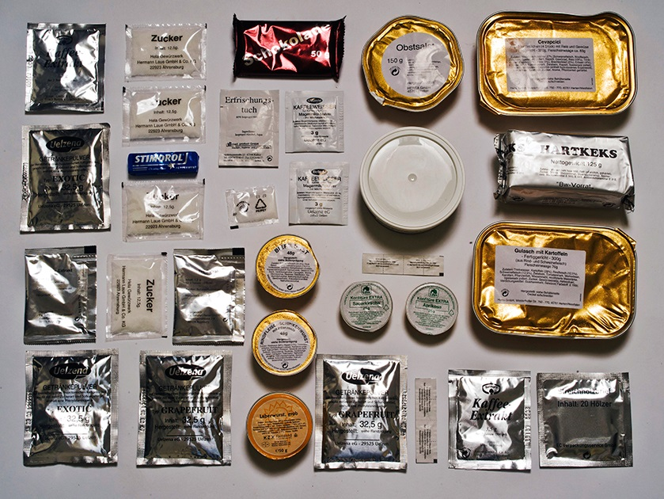
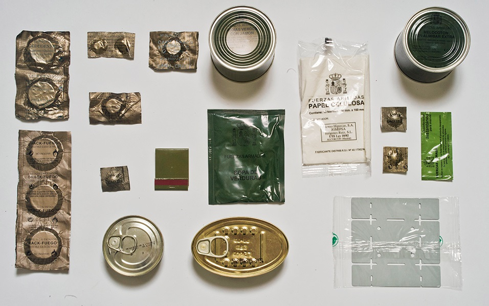
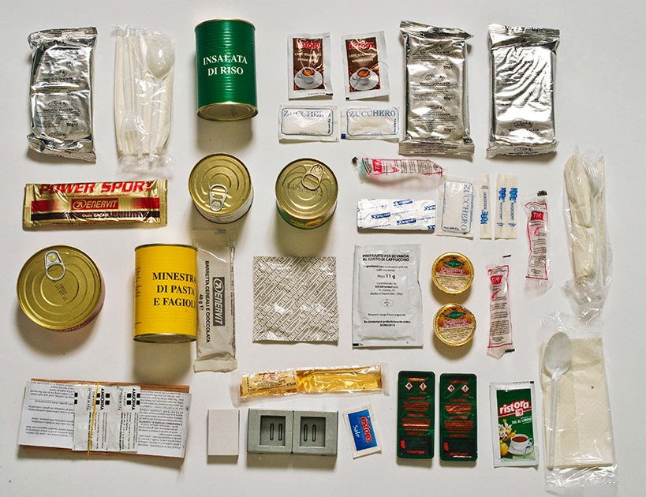
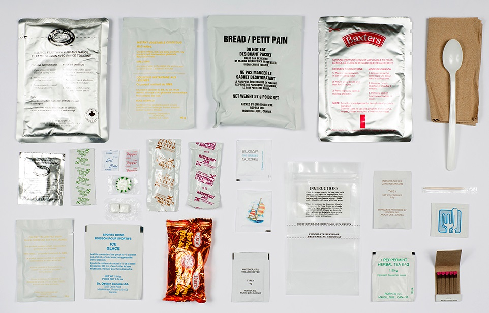
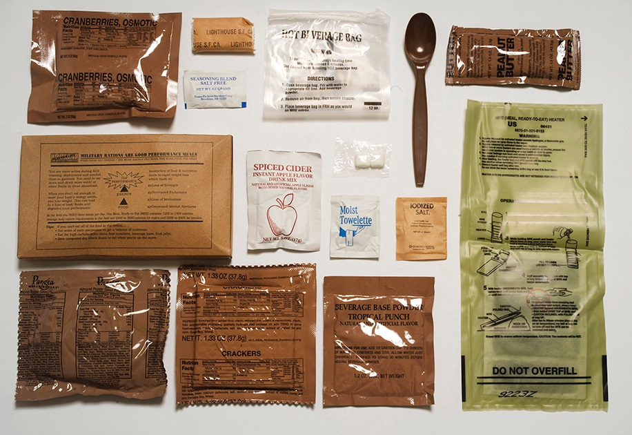

Health food products
-

Pack Allemagne
La ration allemande contient plusieurs sachets de jus de pamplemousse et de jus de fruits exotiques en poudre à diluer dans de l’eau, des biscuits italiens ainsi que des plats plus familiers tels que la Leberwurst (saucisse au foie de porc), le pain de seigle, une goulasch aux pommes de terre et des confitures de cerises et d’abricot pour le petit-déjeuner.
-

Pack Espagne
La ration espagnole propose pour le déjeuner des boîtes de haricots verts au jambon, du calmar à l’huile et du pâté ainsi qu’une soupe de légumes en poudre. Des pêches au sirop composent le dessert et des crackers remplacent le pain. Sans oublier les pilules de vitamine C et de glucose ainsi que les tablettes pour purifier l’eau et se réhydrater. Le repas se prépare grâce à un réchaud jetable, des allumettes et à des tablettes de combustible.
-

Pack Italie
Le petit-déjeuner de la ration du soldat italien se compose d’un sach et d'alcool à 40°, d’un cappuccino en poudre et de plusieurs biscuits. Un réchaud de camping jetable permet de cuisiner une soupe de pâtes et de haricots, de la dinde en boîte et une salade de riz. Une barre énergétique, une salade de fruits en boîte ou une barre de céréales au chocolat forment le dessert.
-

Pack Norvège
Des saveurs britanniques et la technologie américaine (chauffage sans flamme) caractérisent la ration du soldat norvégien. Il boit de l’Earl Grey (thé à la bergamote), mange des haricots et du bacon à la sauce tomate, un biscuit Golden Oat et des bonbons Tooty Frooties.
-

Pack France
Le repas du soldat français est aussi rationnel que raffiné : pâté de chevreuil, cassoulet au confit de canard, porc à la créole et crème au chocolat. Un réchaud jetable permet au soldat de préparer du café. Une boisson en poudre aromatisée, du muesli pour le petit-déjeuner et un caramel Dupont d'Isigny complètent la ration.
-

Pack Canada
Si la ration canadienne contient bien des céréales Bear Paws, le sirop d’érable en est étonnement absent ! En plat principal, le soldats a le choix entre du filet de saumon à la sauce toscane ou du couscous végétarien. Tandis qu’au petit-déjeuner, il peut se faire des tartines au beurre de cacahuète et à la gelée de framboise.
-

Pack États-Unis
Quatre-quarts aux amandes et graines de pavot, canneberges, cidre de pommes épicé (variante américaine sans alcool qui se boit chaud), beurre de cacahuète et crackers composent cette ration typiquement américaine. Le plat principal, des pâtes avec un crumble végétarien et une sauce tomate épicée, est moins traditionnel. Le système de cuisson sans flamme démontre l’ingéniosité technique américaine : il suffit d'ajouter de l’eau à la poudre contenue dans un sac en plastique pour réchauffer la pochette du repas.
-

Pack Australie
La ration du soldat australien est la plus riche en douceurs. Les emballages kaki sont conformes à l’esprit militaire, de la portion de Vegemite (pâte à tartiner à base de levure), on aime ou on déteste, jusqu’au tube de lait concentré en passant par les biscuits à la confiture. Le plat principal - du cheddar fondu, des boulettes de viande accompagnées de pâtes au thon et au piment - se mange grâce à une cuillère ouvre-boîte. En guise d’encas, plusieurs bonbons, des sodas en poudre ainsi que deux barres peu appétissantes étiquetées «ration de chocolat».
-
Pack Royaume-Uni
Des marques familières comme le café Kenco, le thé Typhoo et une mini bouteille de Tabasco agrémentent la ration britannique. En plat principal, le soldat savoure une spécialité très appréciée au pays, du poulet tikka masala accompagné de nouilles aux légumes. Le petit-déjeuner se compose de haricots et de lard. Outre des fruits secs et des noix, de nombreux encas complètent la ration dont une purée de pommes en sachet comme celle que chaque écolier porte dans son cartable pour ses quatre-heures, des bonbons Polo et bien sûr plein de sachets de thé.